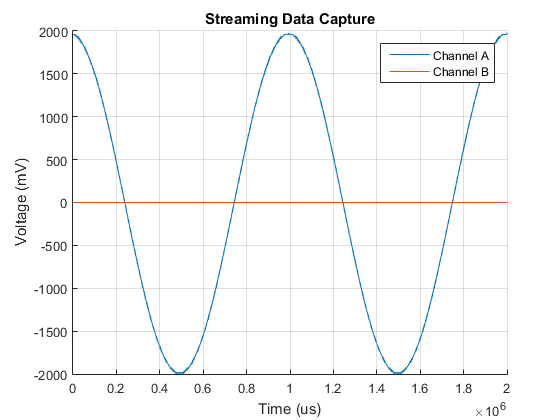

PicoScope 3000 Series Instrument Driver Oscilloscope Streaming Data Capture Example
This is a MATLAB script that demonstrates how to use the PicoScope 3000 Series (A API) Instrument Driver to collect data in streaming mode for 2 channels without aggregation or use of a trigger.
To run the instrument control session, type the name of the file, PS3000A_IC_Generic_Driver_Streaming, at the MATLAB command prompt.
Example: PS3000A_ID_Streaming_Example;
To run this example script: Ensure that the following files/folders are located either in the same directory or define the path in the PS3000aConfig.m file (Drivers (including 64-bit thunk libraries) and prototype files should be in the corresponding architecture folder e.g. win32):
- picotech_ps3000a_generic.mdd
- ps3000a.dll & ps3000aWrap.dll
- ps3000aMFile.m & ps3000aWrapMFile.m
- PicoConstants.m
- PicoStatus.m
- Functions
See also ICDEVICE.
Copyright: Pico Technology Limited 2014 - 2015
Author: KPV
Contents
- Suggested Input Test Signals
- Clear Command Window
- Load Configuration Information
- Parameter Definitions
- Device Connection
- Display Unit Information
- Channel Setup
- Trigger Setup
- Set Data Buffers
- Configure Streaming Data Collection Parameters and Collect Data
- Stop the Device
- Find the Number of Samples
- Process Data
- Disconnect Device
Suggested Input Test Signals
This example was published using the following test signals:
- Channel A: 4Vpp, 1Hz sine wave
- Channel B: 2Vpp, 2Hz square wave
Clear Command Window
clc;
Load Configuration Information
PS3000aConfig;
Parameter Definitions
Define any parameters that might be required throughout the script.
channelA = ps3000aEnuminfo.enPS3000AChannel.PS3000A_CHANNEL_A; channelB = ps3000aEnuminfo.enPS3000AChannel.PS3000A_CHANNEL_B; plotLiveData = PicoConstants.FALSE;
Device Connection
% Create device - specify serial number if required % Specify serial number as 2nd argument if required. ps3000aDeviceObj = icdevice('picotech_ps3000a_generic', ''); % Connect device connect(ps3000aDeviceObj);
Copyright (C) Pico Technology Ltd. 2014 - 2015
PicoScope 3000 Series MATLAB Instrument Driver
Number of units found: 1
Serial number(s): CU654/001
Opening PicoScope 3000 Series device...
Instrument Device Object Using Driver : picotech_ps3000a_generic.mdd
Instrument Information
Type: Oscilloscope
Manufacturer: Pico Technology Ltd.
Model: PicoScope 3000 Series (A API)
Driver Information
DriverType: MATLAB generic
DriverName: picotech_ps3000a_generic.mdd
DriverVersion: 1.2.18
Communication State
Status: open
Setting Device Parameters...
Default Analogue Channel Setup:-
--------------------------------
Channel A:-
Enabled: True
Coupling: DC
Range: 5V
Analogue Offset: 0.0V
Channel B:-
Enabled: True
Coupling: DC
Range: 5V
Analogue Offset: 0.0V
Turning off Equivalent Time Sampling...
Turning off trigger...
Default Block mode parameters:-
Timebase index : 64
Time Interval: 496.0 ns
Number of pre-trigger samples: 0
Number of post-trigger samples: 1000000
Total number of samples: 1000000
Default Streaming mode parameters:-
Streaming interval: 1.00e-06 s
Streaming auto stop: 1
Default Signal generator parameters:-
Start frequency: 1000 Hz
Stop frequency: 1000 Hz
Offset voltage: 0 mV
Peak to Peak voltage: 2000 mV
Initialisation complete.
Connected to PicoScope 3000 Series device:-
Instrument Model: 3204D
Batch/Serial Number: CU654/001
Analogue Channels: 2
Bandwidth: 70 MHz
Buffer memory: 128 MS
Maximum sampling rate: 1 GS/s
Signal Generator Type: Arbitrary Waveform Generator
Display Unit Information
[infoStatus, unitInfo] = invoke(ps3000aDeviceObj, 'getUnitInfo');
unitInfo
unitInfo =
'Driver version: 1.4.4.55'
'USB version: 3.0'
'Hardware version: 1'
'Variant: 3204D'
'Batch & Serial: CU654/001'
'Cal. Date: 11Dec14'
'Kernel version: 1.2'
'Digital HW version: 1'
'Analogue HW version: 1'
'Firmware 1: 1.2.0.0'
'Firmware 2: 1.0.21.0'
Channel Setup
All channels are enabled by default - switch off all except Channels A and B (4 channel devices only). Channel settings are changed as shown below.
% Channel A channelSettings(1).enabled = PicoConstants.TRUE; channelSettings(1).coupling = ps3000aEnuminfo.enPS3000ACoupling.PS3000A_DC; channelSettings(1).range = ps3000aEnuminfo.enPS3000ARange.PS3000A_2V; channelSettings(1).analogueOffset = 0.0; % Obtain the voltage range for Channel A (in millivolts) channelARangeMV = PicoConstants.SCOPE_INPUT_RANGES(channelSettings(1).range + 1); % Channel B channelSettings(2).enabled = PicoConstants.TRUE; channelSettings(2).coupling = ps3000aEnuminfo.enPS3000ACoupling.PS3000A_DC; channelSettings(2).range = ps3000aEnuminfo.enPS3000ARange.PS3000A_2V; channelSettings(2).analogueOffset = 0.0; % Obtain the voltage range for Channel B (in millivolts) channelBRangeMV = PicoConstants.SCOPE_INPUT_RANGES(channelSettings(2).range + 1); if(ps3000aDeviceObj.channelCount == PicoConstants.QUAD_SCOPE) % Channel C channelSettings(3).enabled = PicoConstants.FALSE; channelSettings(3).coupling = ps3000aEnuminfo.enPS3000ACoupling.PS3000A_DC; channelSettings(3).range = ps3000aEnuminfo.enPS3000ARange.PS3000A_2V; channelSettings(3).analogueOffset = 0.0; % Channel D channelSettings(4).enabled = PicoConstants.FALSE; channelSettings(4).coupling = ps3000aEnuminfo.enPS3000ACoupling.PS3000A_DC; channelSettings(4).range = ps3000aEnuminfo.enPS3000ARange.PS3000A_2V; channelSettings(4).analogueOffset = 0.0; end % Obtain the number of analogue channels on the device from the driver numChannels = get(ps3000aDeviceObj, 'channelCount'); for ch = 1:numChannels status.setChannelStatus(ch) = invoke(ps3000aDeviceObj, 'ps3000aSetChannel', ... (ch - 1), channelSettings(ch).enabled, ... channelSettings(ch).coupling, channelSettings(ch).range, ... channelSettings(ch).analogueOffset); end % Obtain the maximum ADC Count from the driver maxADCCount = double(get(ps3000aDeviceObj, 'maxADCValue'));
Trigger Setup
Turn off the trigger. If a trigger is set and the autoStop property in the driver is set to '1', the device will stop collecting data once the number of post trigger samples have been collected.
% Trigger properties and functions are located in the Instrument % Driver's Trigger group. triggerGroupObj = get(ps3000aDeviceObj, 'Trigger'); triggerGroupObj = triggerGroupObj(1); [status.setTriggerOff] = invoke(triggerGroupObj, 'setTriggerOff');
Set Data Buffers
Data buffers for Channel A and B - buffers should be set with the driver, and these MUST be passed with application buffers to the wrapper driver in order to ensure data is correctly copied.
overviewBufferSize = 250000; % Size of the temporary buffers used to collect data from the device. segmentIndex = 0; ratioMode = ps3000aEnuminfo.enPS3000ARatioMode.PS3000A_RATIO_MODE_NONE; % Buffers to be passed to the driver pDriverBufferChA = libpointer('int16Ptr', zeros(overviewBufferSize, 1)); pDriverBufferChB = libpointer('int16Ptr', zeros(overviewBufferSize, 1)); status.setDataBufferChA = invoke(ps3000aDeviceObj, 'ps3000aSetDataBuffer', ... channelA, pDriverBufferChA, overviewBufferSize, segmentIndex, ratioMode); status.setDataBufferChB = invoke(ps3000aDeviceObj, 'ps3000aSetDataBuffer', ... channelB, pDriverBufferChB, overviewBufferSize, segmentIndex, ratioMode); % Application Buffers - these are for copying from the driver into temporarily. pAppBufferChA = libpointer('int16Ptr', zeros(overviewBufferSize, 1)); pAppBufferChB = libpointer('int16Ptr', zeros(overviewBufferSize, 1)); % Streaming properties and functions are located in the Instrument % Driver's Streaming group. streamingGroupObj = get(ps3000aDeviceObj, 'Streaming'); streamingGroupObj = streamingGroupObj(1); % Register application buffer and driver buffers (with the wrapper driver). status.setAppAndDriverBuffersA = invoke(streamingGroupObj, 'setAppAndDriverBuffers', channelA, ... pAppBufferChA, pDriverBufferChA, overviewBufferSize); status.setAppAndDriverBuffersB = invoke(streamingGroupObj, 'setAppAndDriverBuffers', channelB, ... pAppBufferChB, pDriverBufferChB, overviewBufferSize);
Configure Streaming Data Collection Parameters and Collect Data
Use default value for streaming interval which is 1e-6 for 1MS/s Collect data for 1 second with auto stop - maximum array size will depend on PC's resources - type 'memory' at MATLAB command prompt for further information.
% To change the sample interval e.g 5 us for 200KS/s. The call to % ps3000aRunStreaming will output the actual sampling interval used by the % driver. %set(streamingGroupObj, 'streamingInterval', 5e-6); % For 10MS/s, specify 100ns %set(streamingGroupObj, 'streamingInterval', 100e-9); % Set the number of pre- and post-trigger samples % If no trigger is set 'numPreTriggerSamples' is ignored set(ps3000aDeviceObj, 'numPreTriggerSamples', 0); set(ps3000aDeviceObj, 'numPostTriggerSamples', 2000000); % autoStop parameter can be set to false (0) %set(streamingGroupObj, 'autoStop', PicoConstants.FALSE); % Set other streaming parameters downSampleRatio = 1; downSampleRatioMode = ps3000aEnuminfo.enPS3000ARatioMode.PS3000A_RATIO_MODE_NONE; % Defined buffers to store data collected from channels. If capturing data % without using the autoStop flag, or if using a trigger with the autoStop % flag, allocate sufficient space (1.5 times the size is shown below) to % allow for pre-trigger data. Pre-allocating the array is more efficient % than using vertcat to combine data. maxSamples = get(ps3000aDeviceObj, 'numPreTriggerSamples') + ... get(ps3000aDeviceObj, 'numPostTriggerSamples'); % Take into account the downSamplesRatioMode - required if collecting data % without a trigger and using the autoStop flag. % finalBufferLength = round(1.5 * maxSamples / downSampleRatio); pBufferChAFinal = libpointer('int16Ptr', zeros(maxSamples, 1, 'int16')); pBufferChBFinal = libpointer('int16Ptr', zeros(maxSamples, 1, 'int16')); % Prompt User to indicate if they wish to plot live streaming data prompt = {'Plot live streaming data [Y/N]?'}; dialogTitle = 'Input'; numLines = 1; def = {'Y'}; answer = inputdlg(prompt, dlg_title, numLines, def); if(strcmpi(answer, 'Y')) plotLiveData = PicoConstants.TRUE; else plotLiveData = PicoConstants.FALSE; end % % Construct a questdlg with three options % choice = questdlg('Plot live streaming data?', ... % 'Streaming Data Plot', ... % 'Yes','No','Yes'); % % % Handle response % switch choice % case 'Yes' % disp('Live streaming data collection with second plot on completion.'); % plotLiveData = PicoConstants.TRUE; % case 'No' % disp('Streaming data plot on completion.'); % plotLiveData = PicoConstants.FALSE; % % end % Start the device collecting streaming data. [status.runStreaming, actualSampleInterval, sampleIntervalTimeUnitsStr] = ... invoke(streamingGroupObj, 'ps3000aRunStreaming', downSampleRatio, ... downSampleRatioMode, overviewBufferSize); disp('Streaming data...'); fprintf('Click the STOP button to stop capture or wait for auto stop if enabled.\n\n') % Variables to be used when collecting the data hasAutoStopped = PicoConstants.FALSE; newSamples = 0; % Number of new samples returned from the driver. previousTotal = 0; % The previous total number of samples. totalSamples = 0; % Total samples captured by the device. startIndex = 0; % Start index of data in the buffer returned. hasTriggered = 0; % To indicate if trigger has occurred. triggeredAtIndex = 0; % The index in the overall buffer where the trigger occurred. status.getStreamingLatestValues = PicoStatus.PICO_OK; % OK [stopFig.f, stopFig.h] = stopButton(); flag = 1; % Use flag variable to indicate if stop button has been clicked (0) setappdata(gcf, 'run', flag); % Plot Properties - these are for displaying data as it is collected. if(plotLiveData == PicoConstants.TRUE) % Plot on a single figure figure1 = figure('Name','PicoScope 3000 Series Example - Streaming Mode Capture', ... 'NumberTitle','off'); axes1 = axes('Parent', figure1); % Calculate limit - use max of multiple channels if plotting on same graph % Estimate x limit to try and avoid using too much CPU when drawing. xlim(axes1, [0 (actualSampleInterval * maxSamples)]); yRange = channelARangeMV + 0.5; ylim(axes1,[(-1 * yRange) yRange]); hold(axes1,'on'); grid(axes1, 'on'); title('Live Streaming Data Capture'); xLabelStr = strcat('Time (', sampleIntervalTimeUnitsStr, ')'); xlabel(xLabelStr); ylabel('Voltage (mV)'); end % Get data values as long as power status has not changed (check for STOP button push inside loop) while(hasAutoStopped == PicoConstants.FALSE && status.getStreamingLatestValues == PicoStatus.PICO_OK) ready = PicoConstants.FALSE; while(ready == PicoConstants.FALSE) status.getStreamingLatestValues = invoke(streamingGroupObj, 'getStreamingLatestValues'); ready = invoke(streamingGroupObj, 'isReady'); % Give option to abort from here flag = getappdata(gcf, 'run'); drawnow; if(flag == 0) disp('STOP button clicked - aborting data collection.') break; end if(plotLiveData == PicoConstants.TRUE) drawnow; end end % Check for data [newSamples, startIndex] = invoke(streamingGroupObj, 'availableData'); if (newSamples > 0) % Check if the scope has triggered [triggered, triggeredAt] = invoke(streamingGroupObj, 'isTriggerReady'); if (triggered == PicoConstants.TRUE) % Adjust trigger position as MATLAB does not use zero-based % indexing bufferTriggerPosition = triggeredAt + 1; fprintf('Triggered - index in buffer: %d\n', bufferTriggerPosition); hasTriggered = triggered; % Adjust by 1 due to driver using zero indexing triggeredAtIndex = totalSamples + bufferTriggerPosition; end previousTotal = totalSamples; totalSamples = totalSamples + newSamples; % Printing to console can slow down acquisition - use for debug fprintf('Collected %d samples, startIndex: %d total: %d.\n', newSamples, startIndex, totalSamples); % Position indices of data in buffer firstValuePosn = startIndex + 1; lastValuePosn = startIndex + newSamples; % Convert data values to milliVolts from the application buffers bufferChAmV = adc2mv(pAppBufferChA.Value(firstValuePosn:lastValuePosn), channelARangeMV, maxADCCount); bufferChBmV = adc2mv(pAppBufferChB.Value(firstValuePosn:lastValuePosn), channelBRangeMV, maxADCCount); % Process collected data further if required - this example plots % the data if the User has selected 'Y' at the prompt. % Copy data into final buffers pBufferChAFinal.Value(previousTotal + 1:totalSamples) = bufferChAmV; pBufferChBFinal.Value(previousTotal + 1:totalSamples) = bufferChBmV; if(plotLiveData == PicoConstants.TRUE) % Time axis % Multiply by ratio mode as samples get reduced time = (double(actualSampleInterval) * double(downSampleRatio)) * (previousTotal:(totalSamples - 1)); plot(time, bufferChAmV); end % Clear variables for use again clear bufferChAMV; clear firstValuePosn; clear lastValuePosn; clear startIndex; clear triggered; clear triggerAt; end % Check if auto stop has occurred hasAutoStopped = invoke(streamingGroupObj, 'autoStopped'); if(hasAutoStopped == PicoConstants.TRUE) disp('AutoStop: TRUE - exiting loop.'); break; end % Check if 'STOP' button pressed flag = getappdata(gcf, 'run'); if(plotLiveData == PicoConstants.TRUE) drawnow; end if(flag == 0) disp('STOP button clicked - aborting data collection.') break; end end % Close the STOP button window if(exist('stopFig', 'var')) close('Stop Button'); clear stopFig; end if(plotLiveData == PicoConstants.TRUE) drawnow; end if(hasTriggered == PicoConstants.TRUE) fprintf('Triggered at overall index: %d\n', triggeredAtIndex); end if(plotLiveData == PicoConstants.TRUE) % Take hold off the current figure hold off; end fprintf('\n');
ps3000aRunStreaming:- Sample interval 1us Streaming data... Click the STOP button to stop capture or wait for auto stop if enabled. Collected 57344 samples, startIndex: 0 total: 57344. Collected 57344 samples, startIndex: 57344 total: 114688. Collected 57344 samples, startIndex: 114688 total: 172032. Collected 57344 samples, startIndex: 172032 total: 229376. Collected 20624 samples, startIndex: 229376 total: 250000. Collected 36720 samples, startIndex: 0 total: 286720. Collected 57344 samples, startIndex: 36720 total: 344064. Collected 57344 samples, startIndex: 94064 total: 401408. Collected 57344 samples, startIndex: 151408 total: 458752. Collected 41248 samples, startIndex: 208752 total: 500000. Collected 16096 samples, startIndex: 0 total: 516096. Collected 57344 samples, startIndex: 16096 total: 573440. Collected 57344 samples, startIndex: 73440 total: 630784. Collected 57344 samples, startIndex: 130784 total: 688128. Collected 57344 samples, startIndex: 188128 total: 745472. Collected 4528 samples, startIndex: 245472 total: 750000. Collected 52816 samples, startIndex: 0 total: 802816. Collected 57344 samples, startIndex: 52816 total: 860160. Collected 57344 samples, startIndex: 110160 total: 917504. Collected 57344 samples, startIndex: 167504 total: 974848. Collected 25152 samples, startIndex: 224848 total: 1000000. Collected 32192 samples, startIndex: 0 total: 1032192. Collected 57344 samples, startIndex: 32192 total: 1089536. Collected 57344 samples, startIndex: 89536 total: 1146880. Collected 57344 samples, startIndex: 146880 total: 1204224. Collected 45776 samples, startIndex: 204224 total: 1250000. Collected 11568 samples, startIndex: 0 total: 1261568. Collected 57344 samples, startIndex: 11568 total: 1318912. Collected 57344 samples, startIndex: 68912 total: 1376256. Collected 57344 samples, startIndex: 126256 total: 1433600. Collected 57344 samples, startIndex: 183600 total: 1490944. Collected 9056 samples, startIndex: 240944 total: 1500000. Collected 48288 samples, startIndex: 0 total: 1548288. Collected 57344 samples, startIndex: 48288 total: 1605632. Collected 57344 samples, startIndex: 105632 total: 1662976. Collected 57344 samples, startIndex: 162976 total: 1720320. Collected 29680 samples, startIndex: 220320 total: 1750000. Collected 27664 samples, startIndex: 0 total: 1777664. Collected 57344 samples, startIndex: 27664 total: 1835008. Collected 57344 samples, startIndex: 85008 total: 1892352. Collected 57344 samples, startIndex: 142352 total: 1949696. Collected 50304 samples, startIndex: 199696 total: 2000000. AutoStop: TRUE - exiting loop.
Stop the Device
This function should be called regardless of whether auto stop is enabled or not.
status.stop = invoke(ps3000aDeviceObj, 'ps3000aStop');
Find the Number of Samples
This is the number of samples held in the driver itself. The actual number of samples collected when using a trigger is likely to be greater.
[status.noOfStreamingValues, numStreamingValues] = invoke(streamingGroupObj, 'ps3000aNoOfStreamingValues'); fprintf('Number of samples available from the driver: %u.\n\n', numStreamingValues);
Number of samples available from the driver: 2000000.
Process Data
Process all data as required
% Reduce size of arrays if required if(totalSamples < maxSamples) pBufferChAFinal.Value(totalSamples + 1:end) = []; pBufferChBFinal.Value(totalSamples + 1:end) = []; end % Retrieve data for Channel channelAFinal = pBufferChAFinal.Value(); channelBFinal = pBufferChBFinal.Value(); % Plot total data on another figure finalFigure = figure('Name','PicoScope 3000 Series Streaming Mode Capture', ... 'NumberTitle','off'); axes2 = axes('Parent', finalFigure); hold on; title('Streaming Data Capture'); xLabelStr = strcat('Time (', sampleIntervalTimeUnitsStr, ')'); xlabel(xLabelStr); ylabel('Voltage (mV)'); % Find the maximum voltage range maxYRange = max(channelARangeMV, channelBRangeMV); ylim(axes2,[(-1 * maxYRange) maxYRange]); time = (double(actualSampleInterval) * double(downSampleRatio)) * (0:length(channelAFinal) - 1); plot(time, channelAFinal, time, channelBFinal); grid on; legend('Channel A', 'Channel B'); hold off;
Disconnect Device
disconnect(ps3000aDeviceObj);
Connection to PicoScope 3204D with serial number CU654/001 closed successfully. Libraries unloaded successfully.